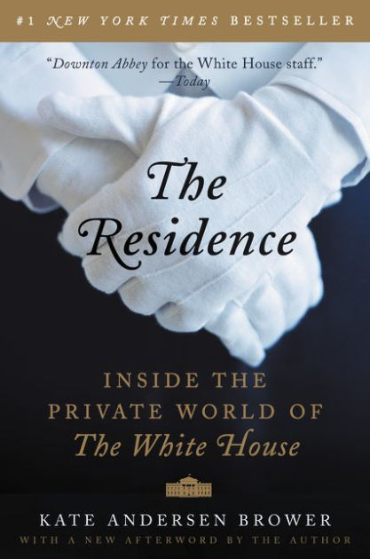

Các đệ nhất gia đình của Mỹ nằm trong số những nhân vật có cuộc sống công tư đan xen nhau chặt chẽ nhất thế giới. Từ sự bí ẩn bao trùm cặp đôi Kennedy quyến rũ, đến vụ lùm xùm xoay quanh Bill và Hillary Clinton trong thời gian tổng thống bị buộc tội, đến sự hiện diện lịch sử mang tính đột phá của Barack và Michelle Obama trong Nhà Trắng, mỗi một chính quyền mới đưa đến Nhà Trắng những cặp vợ chồng độc nhất vô nhị – cùng hàng loạt thách thức mới cho những con người rất mực trung thành và luôn chăm chỉ phục vụ họ: các nhân viên Nhà Trắng.
Không ai hiểu tổng thống Hoa Kỳ và gia đình hơn những người giúp vận hành Nhà Trắng mỗi ngày. Và đây là lần đầu tiên những câu chuyện về quãng thời gian năm mươi năm trong Nhà Trắng dưới mười đời tổng thống cùng vô số những cuộc khủng hoảng lớn nhỏ được kể lại trong Nhà Trắng – Những chuyện chưa kể. Bỏ ra hàng trăm tiếng đồng hồ để phỏng vấn các nhân viên phục vụ, hầu phòng, bếp trưởng, thợ cắm hoa, gác cửa và các nhân viên khác, cùng các cựu đệ nhất phu nhân và các thành viên khác của gia đình tổng thống, Kate Andersen Brower – người đưa tin về nhiệm kỳ thứ nhất của Tổng thống Obama – cho ta một cái nhìn về một nhóm người chuyên sắp đặt những bữa tiệc tối thịnh soạn, luôn đứng chờ sẵn ở các cuộc họp với các quan chức cao cấp nước ngoài, chăm sóc cho các con nhỏ của tổng thống và đệ nhất phu nhân, và thỏa mãn mọi nhu cầu dù cao siêu hay lố bịch của vợ chồng tổng thống.
Qua giọng kể của chính các nhân viên làm việc trong tư dinh tổng thống, đôi lúc khôi hài châm biếm, thường xuyên chan chứa yêu thương, luôn hòa nhã và đầy tự hào, tôi xin giới thiệu cùng độc giả các câu chuyện của:
• Vợ chồng Tổng thống Kennedy – từ khoảnh khắc thân mật gần gũi trong đời sống hôn nhân của họ đến quãng thời gian hỗn loạn sau ngày Tổng thống Kennedy bị ám sát.
• Vợ chồng Tổng thống Johnson – nêu bật câu chuyện kỳ quái về nỗi ám ảnh của Tổng thống Johnson với hệ thống vòi sen trong Nhà Trắng.
• Vợ chồng Tổng thống Nixon – kể cả sự xuất hiện bất ngờ của ông Richard Nixon trong căn bếp Nhà Trắng buổi sáng ngày ông từ chức.
• Vợ chồng Tổng thống Reagan – từ đám cháy gây nguy hiểm cho ông Ronald Reagan ở cuối nhiệm kỳ hai của ông đến việc bà Nancy kiểm soát mọi chi tiết từ lớn đến bé trong Nhà Trắng.
• Vợ chồng Tổng thống Clinton – cặp vợ chồng khiến các gia nhân đứng ngồi không yên với những trận cãi vã ác liệt cùng những màn chén bay đĩa bay của họ.
• Vợ chồng Tổng thống Obama – cặp vợ chồng cùng khiêu vũ theo một bài hát của nữ ca sĩ da đen Mary J. Blige trong đêm đầu tiên dọn vào Nhà Trắng.
“Người Mỹ hiếm khi biết rõ cuộc sống bên trong Nhà Trắng thực sự ra sao. Những hình ảnh sinh động và gần gũi mà Kate Andersen Brower miêu tả về việc chăm sóc các gia đình tổng thống vì thế sẽ rất hấp dẫn các độc giả. Dù các bạn say mê chính trị hay lịch sử, hay là một fan trung thành của bộ phim truyền hình nhiều tập Downton Abbey, quyển sách này cũng sẽ giúp các bạn hiểu thêm về các vị tổng thống ở khía cạnh rất người của họ, điều mà cánh truyền thông chúng thường bỏ quên” – CHUCK TODD, người dẫn chương trình Meet the Press
.“Bằng văn phong tuyệt mỹ, Nhà Trắng - Những chuyện chưa kể cho ta một cái nhìn lôi cuốn có một không hai về những gì thực sự diễn ra bên trong cái thế giới riêng tư của Nhà Trắng. Một cuốn sách chắc chắn phải đọc!” – NORAH O’DONNELL, đồng dẫn chương trình truyền hình CBS This morning, cựu phóng viên chính đưa tin về Nhà Trắng cho CBS News.

KATE ANDERSEN BROWER có bốn năm đưa tin về chính quyền Obama cho hãng tin Bloomberg. Trước đây chị từng làm việc cho CBS News ở New York và Fox News ở Washington, D.C. Chị viết bài cho Washington Post, Bloomberg Businessweek và Washingtonian. Chị sống ở ngoại ô Washington, D.C., cùng chồng và hai con nhỏ. Chị có tài khoản Twitter tại địa chỉ: @katebrower.
Để tìm tư liệu cho Nhà Trắng – Những chuyện chưa kể, tôi đã có những cuộc nói chuyện thẳng thắn với hơn một trăm người từng sống trong Nhà Trắng. Tôi đã phỏng vấn ba cựu đệ nhất phu nhân và con cái của bốn tổng thống, cùng với rất nhiều trợ lý của tổng thống. Nhưng những chi tiết tiết lộ nhiều điều nhất đến từ những cuộc nói chuyện của tôi với khoảng năm mươi nhân viên từng làm việc trong tư dinh và một nhân viên hiện vẫn đang làm ở đó, phần lớn bọn họ chưa từng nói với ai về những trải nghiệm làm việc của họ cho các đệ nhất gia đình nước Mỹ, đồng thời cũng chưa từng được phóng viên nào khác tiếp cận trước đây. Nhiều cuộc nói chuyện diễn ra trực diện. Trong một vài trường hợp hiếm hoi, người cung cấp thông tin yêu cầu không nêu danh tính vì tính nhạy cảm của vấn đề và tôi đã tôn trọng mong muốn của họ. Bên cạnh những câu chuyện nghe trực tiếp về cuộc sống trong dinh tổng thống, tôi còn thu thập nhiều thông tin từ các tài liệu lưu trữ, bao gồm sử liệu truyền miệng ở các thư viện tổng thống, hồi ký của các nhân viên trong tư dinh và của các trợ lý chính trị, và tiểu sử của nhiều người.
• James W.F. “Skip” Allen: Quản lý 1979–2004
• Reds Arrington: Thợ ống nước, tổ trưởng Tổ Nước 1946–1979
• Preston Bruce: Nhân viên gác cửa, 1953–1977
• Traphes Bryant: Thợ điện, giữ chó, 1951–1973
• Cletus Clark: Thợ sơn, 1969–2008
• William “Bill” Cliber: Thợ điện, 1963–1990; Tổ trưởng Tổ Điện, 1990–2004
• Wendy Elsasser: Nhân viên cắm hoa, 1985–2007
• Chris Emery: Quản lý, 1987–1994
• Betty Finney: Nhân viên làm phòng, 1993–2007
• James Hall: Nhân viên phục vụ bán thời gian, 1963–2007
• William “Bill” Hamilton: Nhân viên quét dọn, Quản lý kho, 1958–2013
• James Jeffries: Phụ bếp, Nhân viên phục vụ bán thời gian, từ 1959 đến nay
• Wilson Jerman: Nhân viên quét dọn, Nhân viên phục vụ, 1957-1993; Nhân viên gác cửa bán thời gian, 2003–2010
• Jim Ketchum: Quản lý Mỹ thuật, 1961–1963; Tổng Quản lý Mỹ thuật, 1963–1970
• Christine Limerick: Quản lý bộ phận phòng, 1979–2008 (gián đoạn từ 1986 đến 1991)
• Linsey Little: Nhân viên quét dọn, 1979–2005
• Betty Monkman: Quản lý Mỹ thuật, 1967–1997; Tổng Quản lý Mỹ thuật, 1997–2002
• Ronn Payne: Nhân viên cắm hoa, 1973–1996
• Nelson Pierce: Quản lý, 1961–1987
• Mary Prince: Bảo mẫu của Amy Carter
• James Ramsey: Nhân viên phục vụ, từ cuối chính quyền tổng thống Carter đến 2010
• Stephen Rochon: Tổng Quản lý, 2007–2011
• Frank Ruta: Bếp trưởng, 1979–1991 (gián đoạn từ 1987 đến 1988)
• Tony Savoy: Nhân viên/Giám sát Điều hành, 1984–2013
• Bob Scanlan: Nhân viên cắm hoa, 1998–2010
• Walter Scheib: Quản bếp, 1994–2005
• Rex Scouten: Quản lý, 1957–1969; Tổng Quản lý, 1969–1986; Tổng Quản lý Mỹ thuật, 1986–1997
• Ivaniz Silva: Hầu phòng, 1985–2008
• Herman Thompson: Nhân viên phục vụ bán thời gian, 1960–1993
• Gary Walters: Quản lý, 1976–1986; Tổng Quản lý, 198–2007
• J.B. West: Quản lý, 1941–1957; Tổng Quản lý, 1957–1969
• Lynwood Westray: Nhân viên phục vụ bán thời gian, 1962–1994
• Worthington White: Quản lý, 1980–2012
• Zephyr Wright: Đầu bếp riêng của gia đình Johnson